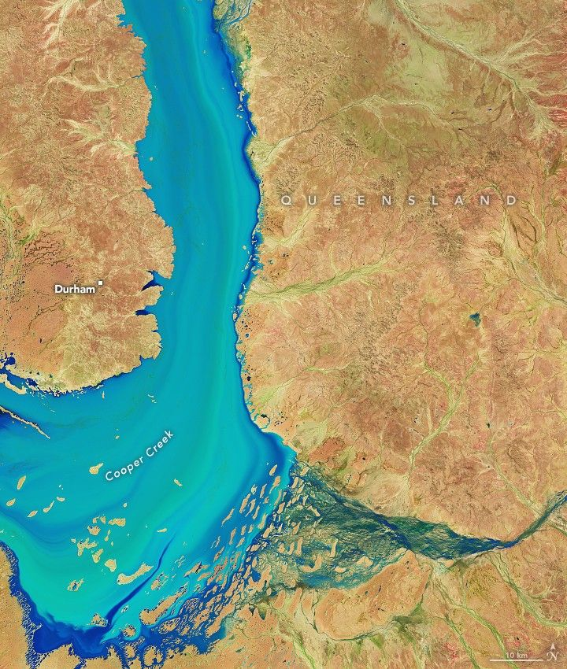

Floods Give Way to a Burst of Desert Life
Floodwaters transformed the typically parched Australian interior as they flowed across the continent. In late March 2025, more than a year’s worth of rain fell in one week in parts of Queensland, setting off intense and destructive flooding in Channel Country. Swollen rivers submerged towns and pasturelands while draining toward Lake Eyre (also called Kati Thanda-Lake Eyre). But as waters receded, swathes of green emerged.
The reawakening of desert life along Cooper Creek is on display in these false-color images. On April 6 (left), floodwaters filled the river channel downstream of Windorah, a town that saw some of its highest river levels on record in the preceding days. By April 22 (right), water levels had subsided somewhat, allowing vegetation to spring up from the moist ground. The images were acquired with the OLI-2 (Operational Land Imager-2) on Landsat 9. The band combination (6-5-4) helps distinguish where water and vegetation are present.
Downstream of this area, floodwater isolated the small town of Innamincka. On April 10, the highest-ever river level was recorded in that location, according to news reports, and residents braced for weeks of impassable roadways into and out of town. The water level surpassed the previous record set in 1974, a historic year for outback flooding. Beyond Innamincka, floods forced Coongie Lakes National Park to close.
A false-color satellite image shows a large area of Queensland and South Australia. Several large river systems run roughly from the northeast to southwest, and a number of ephemeral lakes contain water. The desert landscape is tinged with green from vegetation on the right, where there is more water, and tan on the left, where there is less.
By April 28, levels along Cooper Creek at Coongie Lakes had begun to fall slowly, according to the Australian Bureau of Meteorology. But the surge of water would continue to transform the desert. The false-color image above, captured by the MODIS (Moderate Resolution Imaging Spectroradiometer) on NASA’s Terra satellite on April 28, shows a wider view of Channel Country and the ephemeral flooding and greening.
The image reveals Cooper Creek spilling into Strzelecki Creek, which feeds Lake Blanche. The lake typically fills only in years with large floods or when Cooper Creek sees high flows for consecutive years. According to one analysis, Lake Blanche filled only six times in 100 years starting in 1895. When water does reach this area, it creates wetland habitat that can attract hundreds of thousands of waterbirds.
Cooper Creek and other large seasonal rivers in the outback drain toward Lake Eyre (about 200 kilometers west of Lake Blanche), which is situated at the continent’s lowest point and is dry much of the time. Every few years, enough water remains in rivers after partially evaporating and soaking into the floodplains to flow all the way to the lake, but it is rare for it to fill completely. Meteorologists think the volume of water coming across the desert in early 2025 might lead to the most substantial filling of Lake Eyre in at least 15 years.